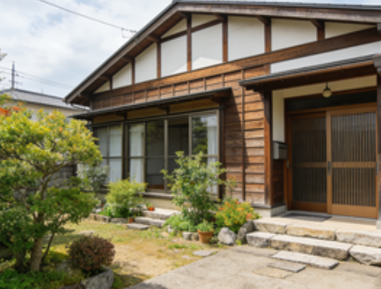

右京区（Ukyo-ku）賃貸情報
右京区は京都西部に位置し、嵐山・嵯峨野といった日本を代表する観光地があり、自然豊かな環境が最大の特徴。桂川沿いの桜並木や紅葉は毎年多くの観光客を魅了し、その景観を望む物件は高級賃貸として人気がある。
太秦地区は映画の街として知られ、東映太秦映画村があることから、映画関係者や芸術家が住むエリアとしても有名。住宅地は主に山沿いに広がっており、静かな環境で家族層や定年退職者に人気が高い。ただし区の面積が広いため、一部エリアは公共交通機関が少なく車が必須となる場合がある。
右京区の特徴
- 特徴：観光地が多く自然豊か、太秦は映画の街として有名
- メリット：静かな住宅環境・景観が良好・高級物件からリーズナブルな物件まで多様
- デメリット：一部エリアは交通不便・観光地周辺は休日に混雑
- 賃料例：1K約60,000円〜、1LDK約85,000円〜、2LDK約120,000円〜、嵐山沿い高級マンション約200,000円〜
推奨物件タイプ

太秦駅徒歩7分 1DK：約75,000円。木造の平屋建てアパートで、庭付きで緑が多い。近隣にスーパーと公園があり家族層に適している。
嵯峨嵐山駅徒歩10分 1LDK：約150,000円。高級マンションの物件で、桂川の景色を眺望できる。駐車場付きで設備が充実している。
花園駅周辺 2LDK：約110,000円。築10年のマンションで、学区内に位置し子育て世帯に人気。公共交通機関も便利で通勤通学に適している。